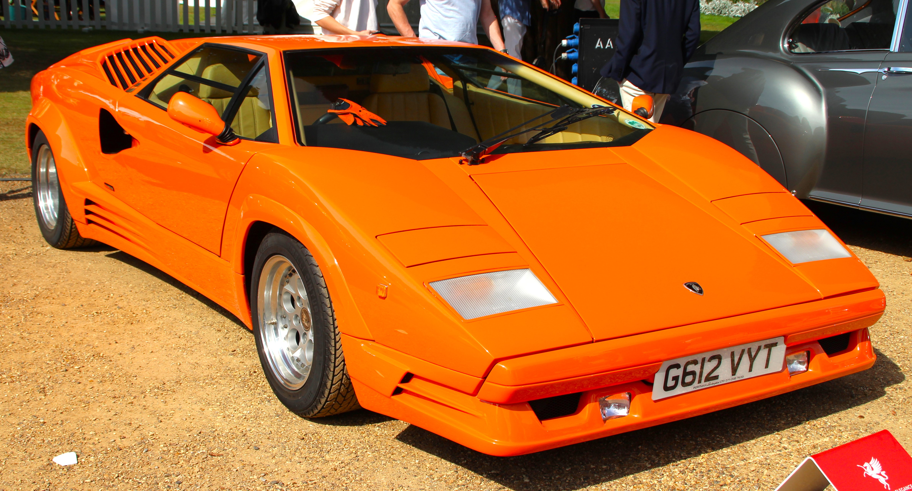
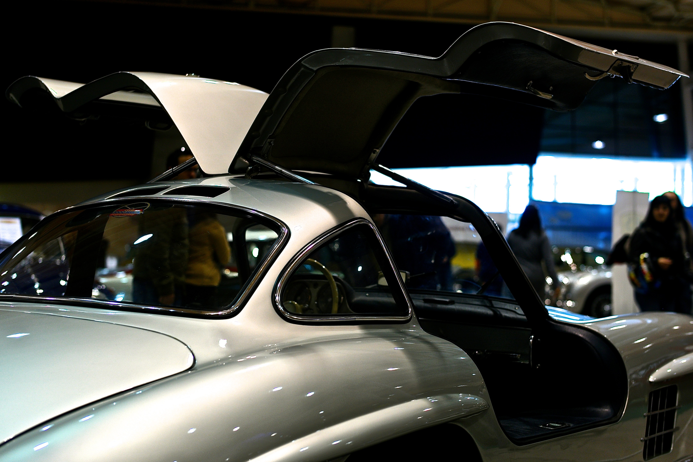
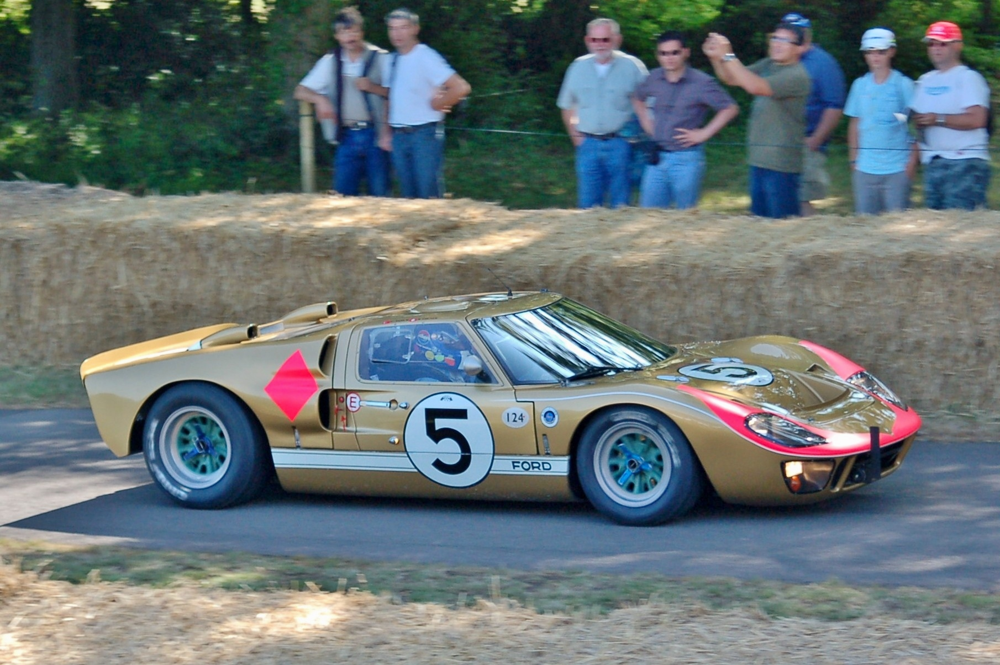
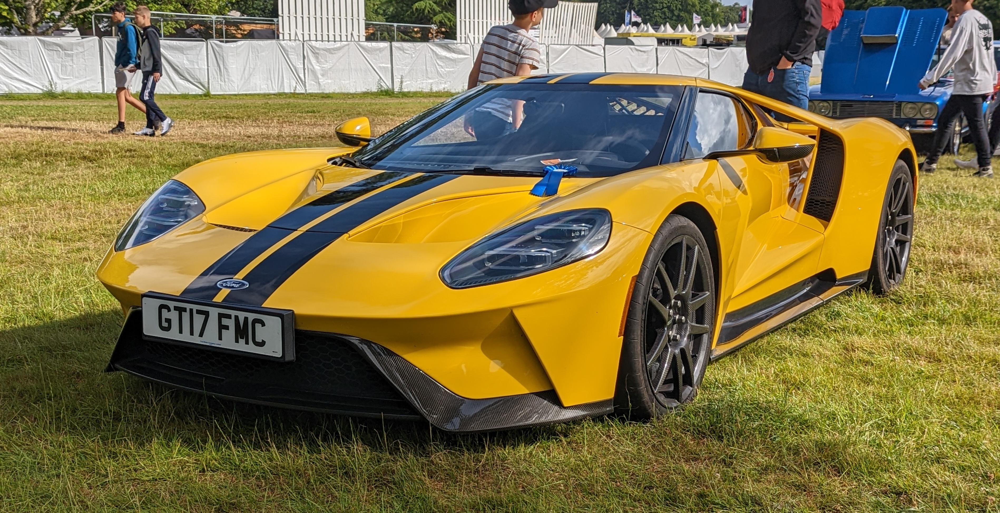

Leyenda Analógica
COUNTACH 25º ANIVERSARIO

Innovación Híbrida
COUNTACH LPI 800-4
COLISIÓN DE ERAS:
LA EVOLUCIÓN DEL RENDIMIENTO
Un viaje curado desde leyendas analógicas hasta la innovación híbrida.
Visión 2026
EL CURADOR
DIGITAL.
Habitamos la Era de la Experiencia. A medida que nos acercamos al 2026, la definición de superdeportivo está pasando de la potencia bruta a la narrativa del patrimonio fusionada con la transparencia técnica.
Hiper-Personalización de la Herencia. Los propietarios ya no buscan especificaciones estándar; exigen mapeo de linaje histórico para cada tejido de fibra de carbono.
El Valor Híbrido. El apetito del mercado gira hacia la 'Tecnología de Transición'—donde el rugido del V12 se encuentra con la precisión silenciosa del torque eléctrico.
CASOS DE ESTUDIO

LAMBORGHINI:
LA TRANSICIÓN V12

MERCEDES-BENZ:
ALAS DE GAVIOTA AL EQ

FORD GT:
ADN LE MANS
TENDENCIAS DE MERCADO
2026.
Análisis predictivo basado en el volumen actual de subastas y las carteras de pedidos de fabricantes de Nivel-1.
"El mercado secundario está valorando el puente híbrido por encima de la electrificación pura. El origen del rendimiento ahora está ligado a la efectividad con la que una marca traduce su alma de combustión a un futuro digital."
EVENTOS ESTRATÉGICOS 2026
GOODWOOD SPEED & HERITAGE
HEVENINGHAM CONCOURS
LE MANS CLASSIC
SEMANA PEBBLE BEACH
SERVICIOS A MEDIDA.
Gestión inigualable de colecciones de nivel mundial. Nuestros equipos de logística y consultoría operan con precisión quirúrgica en los rincones más exclusivos del mundo.
LAMBORGHINI COUNTACH: DE "WUFFLE" A SUPERCONDENSADOR
El Lamborghini Countach redefinió el concepto de superdeportivo en los años 70. Su versión del 25º Aniversario (1990), rediseñada estéticamente por un joven Horacio Pagani, coronó la era analógica con su indomable motor V12 de 5.2 litros y su diseño de cuña radical.
Décadas después, el LPI 800-4 rinde homenaje a esta obra maestra, integrando el legendario V12 de 6.5 litros asistido por un motor eléctrico alimentado por una tecnología punta de supercondensadores. Un salto tecnológico enorme que mantiene intacta el alma intransigente de Sant'Agata Bolognese.
Historia y Evolución: El Diseño de Cuña
En 1971, el prototipo LP500 rompió todos los paradigmas en el Salón de Ginebra. Diseñado por Marcello Gandini de Bertone, el Countach (una expresión de asombro en dialecto piamontés) sustituyó las sensuales curvas del Miura por líneas angulosas, brutales e increíblemente futuristas. Durante casi dos décadas, el Countach no solo fue el superdeportivo insignia de Lamborghini, sino el póster ineludible en las paredes de toda una generación.
El Nacimiento: LP400 (1974)
La pureza del "Periscopio"El primer modelo de producción destacaba por su increíble pureza de líneas, carente de alerones o guardabarros ensanchados. Su nombre "Periscopio" venía de una hendidura en el techo diseñada originalmente para un espejo retrovisor, que se mantuvo como detalle de diseño histórico, a pesar de usar espejos convencionales.
Icono Pop: 25th Aniversario (1988)
Aerodinámica y KevlarTras la iteración del 5000 QV, llegó la edición de redención. Horacio Pagani, entonces un diseñador joven de Lamborghini, se encargó de actualizar agresivamente la carrocería en 1988 para celebrar las "Bodas de Plata" de la marca. Incorporó tomas de aire gigantes y partes fabricadas en Kevlar-carbono, volviéndose la versión estéticamente más polarizante pero mecánicamente más refinada.
Renacimiento: LPI 800-4 (2022)
Tecnología de SupercondensadoresConmemorando medio siglo desde el primer boceto LP500, Lamborghini revivió la placa inyectándole hibridación hiperavanzada. Basándose en la arquitectura monocasco de fibra de carbono del Sián, este nuevo Countach descarta las baterías de iones de litio, favoreciendo en su lugar un supercondensador de muy alta descarga para su tren de 48V, logrando tres veces más poder a un tercio del peso de una batería química.
"El coche original es aquel que no puedes dejar de mirar, a pesar de sus fallos ergonómicos..."— Mike Duff, Historiador Automotriz
Divergencia Técnica
32 Años de Ingeniería Evolutiva / Conjunto de Datos 90-22


Galería Curada: Countach


FORD GT: ADN LE MANS
Nacido de una vendetta legendaria, el Ford GT40 Mk II fue construido en secreto con un solo propósito: destronar a Scuderia Ferrari en las 24 Horas de Le Mans. Y lo logró en 1966 con un inolvidable final 1-2-3 impulsado por la fuerza brutal de su V8 de 7.0L.
Medio siglo después, el nuevo Ford GT repitió la historia ganando su clase en su retorno a Le Mans. Atrás quedó la filosofía del acero pesado; el superdeportivo moderno fue esculpido en el túnel de viento, aprovechando un chasis monocasco de fibra de carbono ultra-rígido y la eficiencia explosiva de un V6 EcoBoost Bi-Turbo de 3.5 litros montado en posición central.
Historia y Evolución: Sangre y Asfalto
Todo comenzó como una disputa comercial en 1963. Henry Ford II intentó, sin éxito, comprar la compañía de Enzo Ferrari; la negativa irritó tanto a Detroit que Ford firmó un cheque sin fondo a Carroll Shelby, Ken Miles, Bruce McLaren y un consorcio de astutos ingenieros británicos y americanos (basados inicialmente en un diseño de Lola). Su única misión dictada por decreto corporativo: aniquilar a Ferrari en su propio terreno dominado, la prestigiosa pista de las 24 Horas de Le Mans.
El Rey de Le Mans: GT40 Mk II (1966)
La Gran Fuerza Bruta AmericanaTras frustrantes abandonos por problemas de caja de cambios aerodinámica en el programa original del Mk I (1964-65), Ford decidió que la solución no era sutileza sino apabullamiento. Encajaron un motor "FE" de 7.0 litros masivo originado para competir en NASCAR, reforzado internamente, dentro del ligero marco del GT. El famoso número de placa "GT40" dictaba su asfixiante y aerodinámica altura: 40 valiosas pulgadas desde el suelo. El coche rompió por fin el invicto italiano, finalizando los tres líderes americanos cruzando contiguos la meta en 1966.
El Homenaje Centenario: Ford GT V8 (2005)
Retrofuturismo SobrealimentadoDevelado a las puertas de celebrar el año centenario de la marca automovilística como empresa, Camilo Pardo dirigió la reanimación visual que en proporciones era prácticamente idéntico al ganador de carreras originario de los 60s, si bien su chasis ahora se fabricaba esculpido desde aleaciones extruídas con prensas "superplásticas" (superplastic-forming). Esta vez el poder venía gritando de un sobrealimentador masivo que chillaba a revoluciones asombrosas montado sobre un bloque modular.
El Caza Táctico: Ford GT (2017)
Fibra y Aerodinámica ComputacionalCon una visión de desarrollo oculta herméticamente temporal bajo el disfraz del proyecto "Silver", Ford no creó un automóvil para la carretera, sino un purasangre de circuito con apenas intermitentes para ser legal. Para 2016 debían ganar Le Mans en clase, repitiendo exactamente los 50 años de triunfo. Esto requirió un sacrificio enorme para los más puristas del músculo americano: despedir el enorme Motor V8. Reemplazado por un empaquetadísimo motor 3.5L EcoBoost Bi-Turbo, su sección trasera se estrechó de manera insana originando conductos eólico-aceleradores por puentes o alas tipo "botarel". Ford dominó, ganó y humilló una vez más demostrando destreza aero-hidráulica computacional total.
7.0L FE V8 Aspirado
3.5L EcoBoost V6 Bi-Turbo
Galería Curada: Ford GT

MERCEDES-BENZ: ALAS DE GAVIOTA AL E PERFORMANCE
Introducido en 1954, el Mercedes-Benz 300 SL "Alas de Gaviota" fue una prodigiosa obra maestra de la posguerra. Su inconfundible diseño era un subproducto de la necesidad técnica de su revolucionario chasis tubular rígido. Fue pionero en la carretera, convirtiéndose en el primer automóvil de producción con inyección directa, una tecnología derivada directamente de la aviación militar.
Hoy, el mandato de liderar la extrema innovación en Affalterbach recae en el asombroso AMG ONE. Este hiperdeportivo ejecuta una hazaña de ingeniería al transplantar, literalmente, la unidad de potencia V6 Turbo-Híbrida de un monoplaza de Fórmula 1 a la vía pública. Una obra de homologación salvaje que demuestra el potencial absoluto del E Performance.
Historia y Evolución: Flechas de Plata en Obras
Desde su renacimiento para las competiciones internacionales inmediatamente tras la Segunda Guerra Mundial apostando por la unidad "W194", Mercedes-Benz ha forjado un legado inamovible combinando tecnología alemana de una precisión enfermiza con una ambición ilimitada. La premisa ha sido siempre unificar la cima de la transferencia balística de un Fórmula uno, para someterlo a ser útil bajando por una avenida abierta en la ciudad.
La Edad de Oro: 300 SL "Gullwing" (1954)
Nacimiento del término "Supercar"Un importador afincado en Nueva York, Maximilian Hoffman, visualizó con claridad en 1953 que el próspero mercado norteamericano tragaría ciegamente una versión domesticada (pero igual de ruda) del campeón W194 de competición en rutas y de la Carrera Panamericana. El apodo "Gullwing" o Alas de Gaviota jamás fue ideado por mercaderes estilistas. Surgió por desesperación de los ingenieros al emplear soldaduras en docenas y docenas de metales extruidos huecos cruzando perpendicularmente por el habitáculo como un cesto ultraligero; dichos tubos imposibilitaban cortar las bisagras tradicionalmente bajas de una puerta regular, provocando su despliegue alzándose en ángulo sobre el piloto. Debajo de sus tapas respiraba uno de los trucos de Stuttgart: Inyección Directa purificada de Messerschmitts.
El Cénit: AMG ONE (2022)
Insensatez Homologada de F1Ola Källenius (CEO) admitió reían borrachos el día de 2017 cuando autorizó desarrollar este prototipo. Tomar exactamente el tren dinámico que dotó de títulos F1 mundiales al híbrido del W06, y someter esa explosión neurótica y dependiente a las severas retenciones ambientales y leyes acústicas, demandó casi 6 años de horrores informáticos retrasando la planta originada en el Reino Unido. Las r.p.m se redujeron preventivamente desde el rugir en pista frenándose a tan solo 11,000 giros (y regulando el temible ralentí) antes del temblor, inyectando cuatro ejes electrificados de control y asistencia con sistemas térmicos-eléctricos MGU-K de freno de retroimpacto y sistema giratorio de compresión MGU-H.
La Inyección: Bosch Mecánica vs MGU-H F1
Inyección Directa Bosch (1954)
El 300 SL fue el primer auto de producción masiva con inyección directa, duplicando la potencia del motor base.
MGU-H F1 (2022)
Heredado del monoplaza W06, elimina el turbo lag usando energía eléctrica para girar el compresor a 100,000 RPM.
Galería Curada: Mercedes-Benz


Casos de Estudio
Explorando la trayectoria desde la potencia analógica pura hasta el futuro de precisión híbrida.
LAMBORGHINI COUNTACH
De carburadores Weber a supercondensadores.
MERCEDES-BENZ
Alas de Gaviota al E Performance.
FORD GT
ADN Le Mans.
Análisis de Mercado 2026
Inteligencia de coleccionistas y proyecciones de valoración.
Prima de Transición
El mercado secundario ha mostrado una prima de subasta del 13.6% en híbridos V12 sobre equivalentes de combustión pura de la década pasada.
Métricas Q1-Q3
- $4.2B+ Volumen Subastado
- 94% Tasa de Venta Hyper-Hybrids
Eventos Estratégicos
Calendario global de concours y subastas para 2026.
.jpg?width=1200)
GOODWOOD SPEED & HERITAGE
Incorporando la nueva clase "Hyper-Hybrids" en la famosa colina.

LE MANS CLASSIC
Celebración del 60 aniversario del 1-2-3 de Ford.
Consultoría Global
Representación discreta y adquisiciones estratégicas para las colecciones automotrices más exclusivas del mundo.
Logística Integral
Transporte cerrado con control de clima a través de continentes con monitoreo telemétrico 24/7 y seguridad de nivel militar.
Auditoría de Orígenes
Autenticación forense de números coincidentes, historia de carreras y metales utilizando tecnología patentada de escaneo espectral.
Subastas Privadas
Participación anónima en subastas y ventas privadas, maximizando el apalancamiento sin afectar la percepción de la oferta del mercado.
Iniciar Contacto
Protocolo de Comunicación SeguraPortal Privado
Acceso a Carteras de Clientes